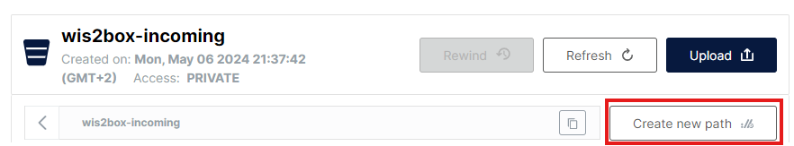

قوالب تعيين CSV إلى BUFR
نتائج التعلم
بنهاية هذه الجلسة العملية، ستكون قادرًا على:
- إنشاء قالب تعيين BUFR جديد لبيانات CSV الخاصة بك
- تحرير وتصحيح قالب تعيين BUFR المخصص الخاص بك من سطر الأوامر
- تكوين إضافة بيانات CSV إلى BUFR لاستخدام قالب تعيين BUFR مخصص
- استخدام قوالب AWS و DAYCLI المدمجة لتحويل بيانات CSV إلى BUFR
مقدمة
تُستخدم ملفات بيانات القيم المفصولة بفواصل (CSV) غالبًا لتسجيل البيانات المراقبة وغيرها في تنسيق جدولي. معظم أجهزة تسجيل البيانات المستخدمة لتسجيل إخراج الحساسات قادرة على تصدير الملاحظات في ملفات محددة، بما في ذلك في CSV. بالمثل، عندما يتم إدخال البيانات في قاعدة بيانات من السهل تصدير البيانات المطلوبة في ملفات مُنسقة بتنسيق CSV.
يوفر وحدة wis2box csv2bufr أداة سطر أوامر لتحويل بيانات CSV إلى تنسيق BUFR. عند استخدام csv2bufr، تحتاج إلى توفير قالب تعيين BUFR يعين أعمدة CSV إلى عناصر BUFR المقابلة. إذا كنت لا ترغب في إنشاء قالب تعيين خاص بك، يمكنك استخدام قوالب AWS و DAYCLI المدمجة لتحويل بيانات CSV إلى BUFR، ولكن ستحتاج إلى التأكد من أن بيانات CSV التي تستخدمها بالتنسيق الصحيح لهذه القوالب. إذا كنت ترغب في فك تشفير المعلمات التي لا تتضمنها قوالب AWS و DAYCLI، فستحتاج إلى إنشاء قالب تعيين خاص بك.
في هذه الجلسة ستتعلم كيفية إنشاء قالب تعيين خاص بك لتحويل بيانات CSV إلى BUFR. ستتعلم أيضًا كيفية استخدام قوالب AWS و DAYCLI المدمجة لتحويل بيانات CSV إلى BUFR.
التحضير
تأكد من أنه تم بدء تشغيل wis2box-stack بـ python3 wis2box.py start
تأكد من أن لديك متصفح ويب مفتوح مع واجهة MinIO لنسختك بالانتقال إلى http://YOUR-HOST:9000
إذا كنت لا تتذكر بيانات اعتماد MinIO الخاصة بك، يمكنك العثور عليها في ملف wis2box.env في دليل wis2box على VM الطالب الخاص بك.
تأكد من أن لديك MQTT Explorer مفتوحًا ومتصلًا بوسيطك باستخدام بيانات الاعتماد everyone/everyone.
إنشاء قالب تعيين
تأتي وحدة csv2bufr مع أداة سطر أوامر لإنشاء قالب تعيين خاص بك باستخدام مجموعة من تسلسلات BUFR و/أو عنصر BUFR كمدخلات.
للعثور على تسلسلات BUFR وعناصر محددة، يمكنك الرجوع إلى جداول BUFR على https://confluence.ecmwf.int/display/ECC/BUFR+tables.
أداة سطر أوامر تعيينات csv2bufr
للوصول إلى أداة سطر أوامر csv2bufr، تحتاج إلى تسجيل الدخول إلى حاوية wis2box-api:
cd ~/wis2box
python3 wis2box-ctl.py login wis2box-api
لطباعة صفحة المساعدة للأمر csv2bufr mapping:
csv2bufr mappings --help
تعرض صفحة المساعدة أمرين فرعيين:
csv2bufr mappings create: إنشاء قالب تعيين جديدcsv2bufr mappings list: سرد قوالب التعيين المتوفرة في النظام
قائمة تعيينات csv2bufr
سيعرض لك أمر csv2bufr mapping list قوالب التعيين المتوفرة في النظام.
تُخزن القوالب الافتراضية في الدليل /opt/wis2box/csv2bufr/templates في الحاوية.
لمشاركة قوالب التعيين المخصصة مع النظام، يمكنك تخزينها في الدليل الذي يحدده $CSV2BUFR_TEMPLATES، والذي يتم تعيينه إلى /data/wis2box/mappings بشكل افتراضي في الحاوية. نظرًا لأن الدليل /data/wis2box/mappings في الحاوية مرتبط بالدليل $WIS2BOX_HOST_DATADIR/mappings على المضيف، ستجد قوالب التعيين المخصصة الخاصة بك في الدليل $WIS2BOX_HOST_DATADIR/mappings على المضيف.
دعونا نحاول إنشاء قالب تعيين مخصص جديد باستخدام الأمر csv2bufr mapping create باستخدام تسلسل BUFR 301150 بالإضافة إلى عنصر BUFR 012101 كمدخلات.
csv2bufr mappings create 301150 012101 --output /data/wis2box/mappings/my_custom_template.json
يمكنك التحقق من محتوى قالب التعيين الذي أنشأته للتو باستخدام الأمر cat:
cat /data/wis2box/mappings/my_custom_template.json
فحص قالب التعيين
كم عدد أعمدة CSV التي يتم تعيينها إلى عناصر BUFR؟ ما هو رأس CSV لكل عنصر BUFR الذي يتم تعيينه؟
انقر لكشف الإجابة
يعين قالب التعيين الذي أنشأته 5 أعمدة CSV إلى عناصر BUFR، وهي العناصر الأربعة في تسلسل 301150 بالإضافة إلى عنصر BUFR 012101.
تُعين الأعمدة CSV التالية إلى عناصر BUFR:
- wigosIdentifierSeries يعين إلى
"eccodes_key": "#1#wigosIdentifierSeries"(عنصر BUFR 001125) - wigosIssuerOfIdentifier يعين إلى
"eccodes_key": "#1#wigosIssuerOfIdentifier"(عنصر BUFR 001126) - wigosIssueNumber يعين إلى
"eccodes_key": "#1#wigosIssueNumber"(عنصر BUFR 001127) - wigosLocalIdentifierCharacter يعين إلى
"eccodes_key": "#1#wigosLocalIdentifierCharacter"(عنصر BUFR 001128) - airTemperature يعين إلى
"eccodes_key": "#1#airTemperature"(عنصر BUFR 012101)
يفتقد قالب التعيين الذي أنشأته معلومات metadata المهمة حول الملاحظة التي تم إجراؤها، تاريخ ووقت الملاحظة، وخطوط العرض والطول للمحطة.
الخطوة التالية سنقوم بتحديث قالب التعيين وإضافة التسلسلات التالية:
- 301011 للتاريخ (السنة، الشهر، اليوم)
- 301012 للوقت (الساعة، الدقيقة)
- 301023 للموقع (خط العرض/الطول (دقة خشنة))
والعناصر التالية:
- 010004 للضغط
- 007031 لارتفاع البارومتر فوق مستوى سطح البحر
نفذ الأمر التالي لتحديث قالب التعيين:
csv2bufr mappings create 301150 301011 301012 301023 007031 012101 010004 --output /data/wis2box/mappings/my_custom_template.json
وافحص محتوى قالب التعيين مرة أخرى:
cat /data/wis2box/mappings/my_custom_template.json
فحص قالب التعيين المحدث
كم عدد أعمدة CSV التي يتم تعيينها الآن إلى عناصر BUFR؟ ما هو رأس CSV لكل عنصر BUFR الذي يتم تعيينه؟
انقر لكشف الإجابة
يعين قالب التعيين الذي أنشأته الآن 18 عمود CSV إلى عناصر BUFR: - 4 عناصر BUFR من تسلسل BUFR 301150 - 3 عناصر BUFR من تسلسل BUFR 301011 - 2 عناصر BUFR من تسلسل BUFR 301012 - 2 عناصر BUFR من تسلسل BUFR 301023 - عنصر BUFR 007031 - عنصر BUFR 012101
تُعين الأعمدة CSV التالية إلى عناصر BUFR:
- wigosIdentifierSeries يعين إلى
"eccodes_key": "#1#wigosIdentifierSeries"(عنصر BUFR 001125) - wigosIssuerOfIdentifier يعين إلى
"eccodes_key": "#1#wigosIssuerOfIdentifier"(عنصر BUFR 001126) - wigosIssueNumber يعين إلى
"eccodes_key": "#1#wigosIssueNumber"(عنصر BUFR 001127) - wigosLocalIdentifierCharacter يعين إلى
"eccodes_key": "#1#wigosLocalIdentifierCharacter"(عنصر BUFR 001128) - year يعين إلى
"eccodes_key": "#1#year"(عنصر BUFR 004001) - month يعين إلى
"eccodes_key": "#1#month"(عنصر BUFR 004002) - day يعين إلى
"eccodes_key": "#1#day"(عنصر BUFR 004003) - hour يعين إلى
"eccodes_key": "#1#hour"(عنصر BUFR 004004) - minute يعين إلى
"eccodes_key": "#1#minute"(عنصر BUFR 004005) - latitude يعين إلى
"eccodes_key": "#1#latitude"(عنصر BUFR 005002) - longitude يعين إلى
"eccodes_key": "#1#longitude"(عنصر BUFR 006002) - heightOfBarometerAboveMeanSeaLevel" يعين إلى
"eccodes_key": "#1#heightOfBarometerAboveMeanSeaLevel"(عنصر BUFR 007031) - airTemperature يعين إلى
"eccodes_key": "#1#airTemperature"(عنصر BUFR 012101) - nonCoordinatePressure يعين إلى
"eccodes_key": "#1#nonCoordinatePressure"(عنصر BUFR 010004)
تحقق من محتوى الملف custom_template_data.csv في الدليل /root/data-conversion-exercises:
cat /root/data-conversion-exercises/custom_template_data.csv
لاحظ أن رؤوس هذا الملف CSV هي نفس رؤوس CSV في قالب التعيين الذي أنشأته.
لاختبار تحويل البيانات، يمكننا استخدام أداة سطر الأوامر csv2bufr لتحويل ملف CSV إلى BUFR باستخدام قالب التعيين الذي أنشأناه:
csv2bufr data transform --bufr-template my_custom_template /root/data-conversion-exercises/custom_template_data.csv
يجب أن ترى الإخراج التالي:
CLI: ... Transforming /root/data-conversion-exercises/custom_template_data.csv to BUFR ...
CLI: ... Processing subsets:
CLI: ..... 94 bytes written to ./WIGOS_0-20000-0-15015_20250412T210000.bufr4
CLI: End of processing, exiting.
تحقق من محتوى ملف BUFR
كيف يمكنك التحقق من محتوى ملف BUFR الذي أنشأته للتو والتحقق من أنه قد تم ترميز البيانات بشكل صحيح؟
انقر لكشف الإجابة
يمكنك استخدام الأمر bufr_dump -p للتحقق من محتوى ملف BUFR الذي أنشأته للتو.
سيعرض لك الأمر محتوى ملف BUFR بتنسيق يمكن قراءته بواسطة الإنسان.
bufr_dump -p ./WIGOS_0-20000-0-15015_20250412T210000.bufr4
في الإخر
بيانات مفقودة
يُعترف بأن البيانات قد تكون مفقودة لأسباب متعددة، سواء بسبب فشل الحساسات أو عدم مراقبة العنصر. في هذه الحالات، يمكن ترميز البيانات المفقودة وفقًا للإجابة أعلاه، وتظل البيانات الأخرى في التقرير صالحة.
تحديث ملف المثال
قم بتحديث ملف المثال الذي قمت بتنزيله لاستخدام تاريخ ووقت اليوم وغير معرفات محطة WIGOS لاستخدام المحطات التي قمت بتسجيلها في wis2box-webapp.
رفع البيانات إلى MinIO وفحص النتيجة
انتقل إلى واجهة MinIO وقم بتسجيل الدخول باستخدام بيانات الاعتماد من ملف wis2box.env.
انتقل إلى wis2box-incoming وانقر على الزر "إنشاء مسار جديد":

أنشئ مجلدًا جديدًا في دلو MinIO يطابق معرف مجموعة البيانات للمجموعة التي أنشأتها بالقالب='weather/surface-weather-observations/synop':

قم برفع ملف المثال الذي قمت بتنزيله إلى المجلد الذي أنشأته في دلو MinIO:

تحقق من لوحة تحكم Grafana على http://YOUR-HOST:3000 لمعرفة ما إذا كانت هناك أي تحذيرات أو أخطاء. إذا رأيت أيًا منها، حاول إصلاحها وكرر التمرين.
تحقق من MQTT Explorer لمعرفة ما إذا كنت تتلقى إشعارات بيانات WIS2.
إذا نجحت في إدخال البيانات، يجب أن ترى 3 إشعارات في MQTT Explorer على الموضوع origin/a/wis2/<centre-id>/data/weather/surface-weather-observations/synop للمحطات الثلاث التي أبلغت عن بيانات لها:

استخدام قالب 'DayCLI'
يوفر قالب DayCLI قالب تعيين لتحويل بيانات CSV اليومية إلى تسلسل BUFR 307075، دعمًا للإبلاغ عن بيانات المناخ اليومية.
يمكن العثور على وصف قالب DAYCLI هنا daycli-template.
لمشاركة هذه البيانات على WIS2، ستحتاج إلى إنشاء مجموعة بيانات جديدة في wis2box-webapp تحتوي على التسلسل الهرمي لموضوع WIS2 الصحيح والذي يستخدم قالب DAYCLI لتحويل بيانات CSV إلى BUFR.
إنشاء مجموعة بيانات wis2box لنشر رسائل DAYCLI
انتقل إلى محرر المجموعات في wis2box-webapp وأنشئ مجموعة بيانات جديدة. استخدم نفس معرف المركز كما في الجلسات العملية السابقة واختر Data Type='climate/surface-based-observations/daily':

انقر على "CONTINUE TO FORM" وأضف وصفًا لمجموعة البيانات الخاصة بك، وضع المربع الحدودي وقدم معلومات الاتصال لمجموعة البيانات. بمجرد الانتهاء من ملء جميع الأقسام، انقر على 'VALIDATE FORM' وتحقق من النموذج.
راجع مكونات البيانات للمجموعات. انقر على "UPDATE" بجانب المكون الذي يحمل اسم "بيانات CSV المحولة إلى BUFR" وسترى أن القالب مضبوط على DayCLI:

أغلق تكوين المكون الإضافي وأرسل النموذج باستخدام الرمز المميز للمصادقة الذي أنشأته في الجلسة العملية السابقة.
يجب أن يكون لديك الآن مجموعة بيانات ثانية في wis2box-webapp مُعدة لاستخدام قالب DAYCLI لتحويل بيانات CSV إلى BUFR.
مراجعة بيانات الإدخال لمثال daycli
قم بتنزيل المثال لهذا التمرين من الرابط أدناه:
افتح الملف الذي قمت بتنزيله في محرر وافحص المحتوى:
Question
ما هي المتغيرات الإضافية المدرجة في قالب daycli؟
انقر لكشف الإجابة
يتضمن قالب daycli بيانات تعريفية مهمة حول موقع الأداة وتصنيفات جودة القياس لدرجة الحرارة والرطوبة، علامات التحكم في الجودة ومعلومات حول كيفية حساب متوسط درجة الحرارة اليومية.
تحديث ملف المثال
يحتوي ملف المثال على صف واحد من البيانات لكل يوم في شهر، ويبلغ عن بيانات لمحطة واحدة. قم بتحديث ملف المثال الذي قمت بتنزيله لاستخدام تاريخ ووقت اليوم وغير معرفات محطة WIGOS لاستخدام محطة قمت بتسجيلها في wis2box-webapp.
رفع البيانات إلى MinIO وفحص النتيجة
كما في السابق، ستحتاج إلى رفع البيانات إلى دلو 'wis2box-incoming' في MinIO ليتم معالجتها بواسطة محول csv2bufr. هذه المرة ستحتاج إلى إنشاء مجلد جديد في دلو MinIO يطابق معرف مجموعة البيانات للمجموعة التي أنشأتها بالقالب='climate/surface-based-observations/daily' والذي سيكون مختلفًا عن معرف مجموعة البيانات الذي استخدمته في التمرين السابق:

بعد رفع البيانات تحقق من عدم وجود تحذيرات أو أخطاء في لوحة تحكم Grafana وتحقق من MQTT Explorer لمعرفة ما إذا كنت تتلقى إشعارات بيانات WIS2.
إذا نجحت في إدخال البيانات، يجب أن ترى 30 إشعارًا في MQTT Explorer على الموضوع origin/a/wis2/<centre-id>/data/climate/surface-based-observations/daily للثلاثين يومًا في الشهر الذي أبلغت عن بيانات له:

الخاتمة
تهانينا
في هذه الجلسة العملية، تعلمت:
- كيفية إنشاء قالب تعيين مخصص لتحويل بيانات CSV إلى BUFR
- كيفية استخدام القوالب المدمجة AWS و DAYCLI لتحويل بيانات CSV إلى BUFR